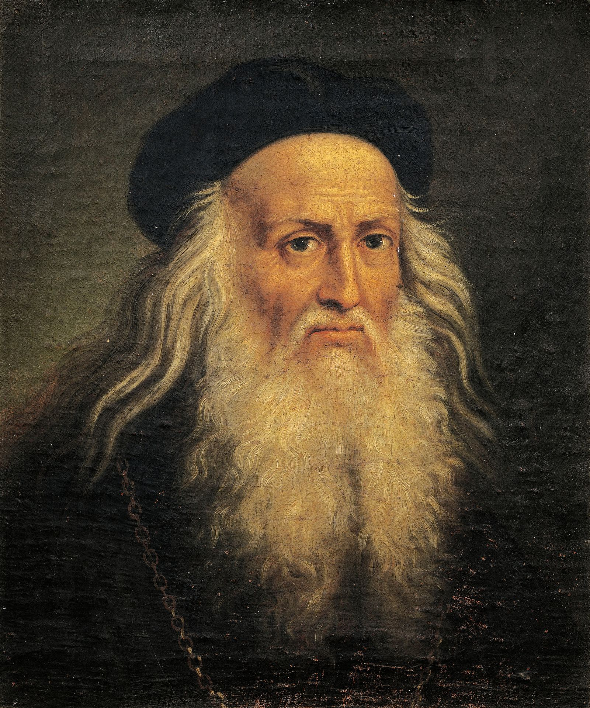
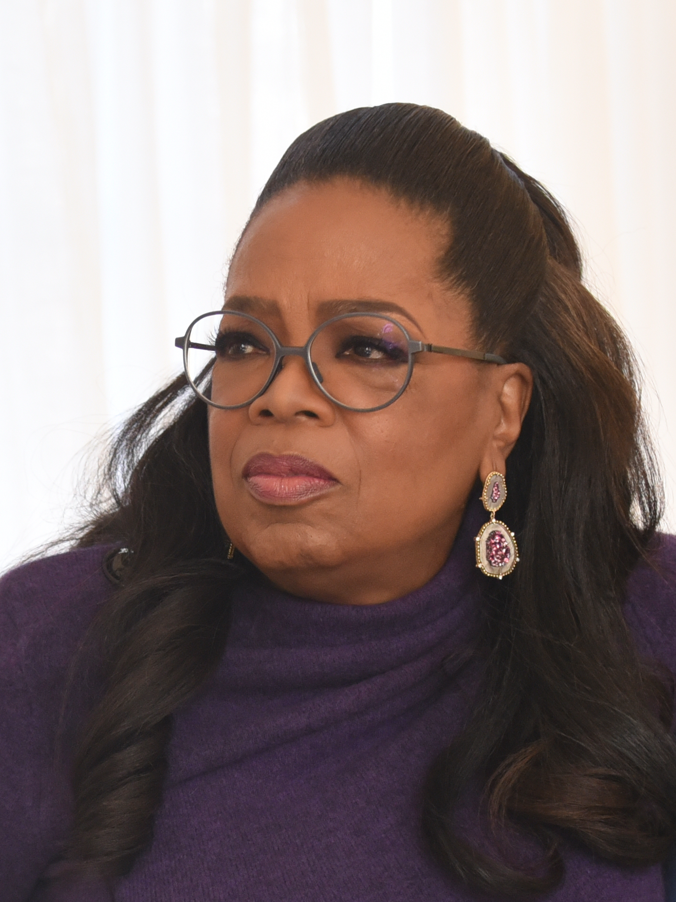
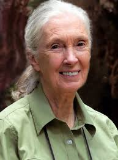

Esempi di Persone con Intelligenze Diverse
- Intelligenza Linguistica: William Shakespeare – celebre scrittore e poeta inglese.

- Intelligenza Logico-Matematica: Albert Einstein – fisico teorico noto per la teoria della relatività.

- Intelligenza Spaziale: Leonardo da Vinci – artista e inventore con eccezionali abilità visive e creative.

- Intelligenza Corporeo-Cinestetica: Marcell Jacobs – ginnasta olimpica con controllo corporeo straordinario.
- Intelligenza Musicale: Ludwig van Beethoven – compositore tedesco tra i più influenti della storia.

- Intelligenza Emotiva: Oprah Winfrey – conduttrice e filantropa dotata di empatia e comunicazione.

- Intelligenza Intrapersonale: Sigmund Freud – psicoanalista che ha esplorato la mente e la consapevolezza di sé.

- Intelligenza Naturalistica: Jane Goodall – scienziata e ambientalista esperta nello studio dei primati.
